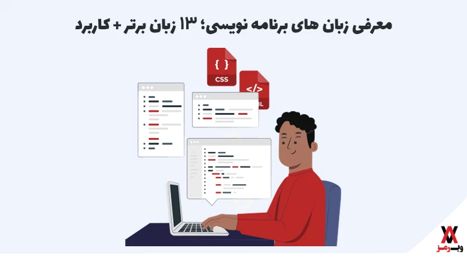

معرفی ماشین های های برنامه نویسی ۲۶ زبان برتر دنیا
در دنیای فناوری امروز، زبانهای برنامهنویسی بهعنوان ابزار اصلی توسعه نرمافزارها و اپلیکیشنها نقشی حیاتی ایفا میکنند. هر زبان با ویژگیها و کاربردهای خاص خود، برای پروژههای متفاوتی مانند وب، موبایل، دسکتاپ یا حتی تحلیل داده به کار گرفته میشود.